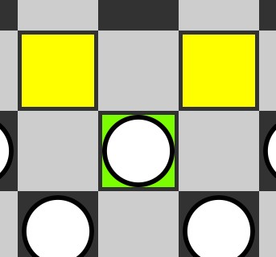
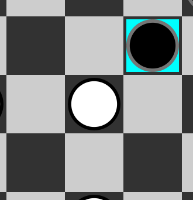
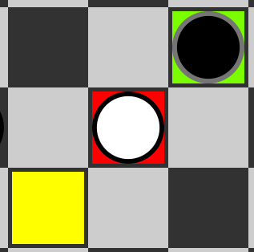
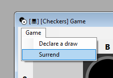
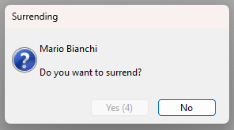
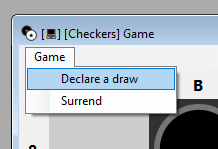

Click on the piece you want to move. The selected piece will have a green background, and available moves will be displayed with a yellow background.

Pieces that will be forced to capture another piece will be highlighted with a blue background.

Then, pieces that will be captured will be highlighted with a red background.

If a piece is selected, clicking on it again on a cell where a move is not legal or on an opponent's piece will deselect it.
To surrender, open the menu (by clicking on "Game") and select "Surrender".

A prompt to confirm surrender will appear.
Clicking "Yes" will conclude the surrender, making the opponent win.

To declare a draw, open the menu (by clicking on "Game") and select "Declare Draw".

A prompt to confirm the draw will appear.
By selecting "Yes", another prompt for further confirmation will appear, which must be confirmed by the opponent.
If the opponent also selects "Yes", the game will result in a draw.
Players take turns starting with white.
The current player chooses a piece and moves it forward and diagonally, i.e., moves it to one of the diagonally adjacent empty cells.
If the selected cell is occupied by the player's own piece, the move is considered invalid.
However, if the chosen cell is occupied by an opponent's piece and the next adjacent cell is empty, the player has the right to proceed with the move, executing a 'capture' scenario.
During this procedure, the player's piece will be moved beyond the adjacent opponent's piece, thus resulting in the removal of the latter from the game board.
If during their turn a player has the possibility to capture an opponent's piece, they are obliged to make the capture.
In other words, if a piece is able to move to capture an opponent's piece, the player must execute the capture move.
This rule is binding and cannot be ignored.
However, if there are multiple capture options available, the player can choose which capture to make.
If, after completing a capture move, the player's piece has an immediate possibility to capture another opponent's piece, then the player is obliged to continue the sequence of captures.
In other words, if a piece has the opportunity to execute a series of consecutive captures, the player must proceed with such moves until there is no longer the possibility to make further captures.
This rule is binding and must be adhered to during the turn of the player executing the captures.
When a piece reaches the last row of the opponent's field, it is promoted to a "king".
The king has the ability to move both forward and backward along the diagonals.
However, a king cannot continue a series of captures after being promoted.
Additionally, a king cannot be captured by an opponent's piece, unless the opponent's piece is also a king.